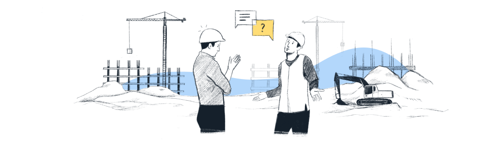
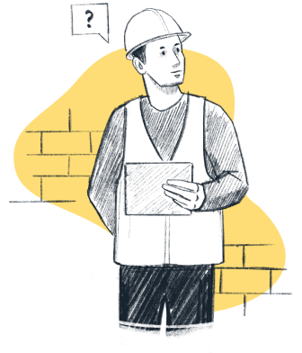

Эффективные проекты стоят дешевле и завершаются в срок.

Тщательно отслеживайте движение стройматериалов, чтобы избежать краж и повреждений.

Обеспечьте здоровье и благополучие людей, работающих на вашей площадке.
Хаос может быть удивительной творческой силой, воздвигающая новые здания из пыли. Хаос вызывает несчастные случаи, задержки и потери. Он вводит проекты в стресс и разочарование. Это означает, что вы действительно не контролируете ситуацию.
Мы знаем всё о гордости от сияющего нового здания. Нам также известно всё о разочаровании от попыток завершить проект в срок и в рамках бюджета.
Мы здесь, чтобы помочь.


Отслеживайте доставку по всей цепочке поставок
Оптимизируйте и контролируйте свое прибытие на место
Возьмите под контроль данные в режиме реального времени
Мы позаботимся обо всех ваших различных поставках и их многочисленных специализированных требованиях к разгрузке.

Поставки бетона точно планируются, а его состояние контролируется, что обеспечивает максимально возможное время для установки.

Отходы контролируются и сортируются, а заполненность контейнеров отслеживается в цифровом виде.

Вся опалубка отслеживается от прибытия до отправления, а ее состояние контролируется, что сводит к минимуму потери и повреждения.

Сборные панели прибывают по очереди, их хранение на месте отслеживается, а их установка планируется и контролируется.

Элементы фасада поступают последовательно, их сборка контролируется, а перемещение отслеживается.

Материалы поступают точно в срок, маркируются и детально отслеживаются для установки.

Строительные леса отслеживаются от получения до хранения, использования и возврата, поэтому всегда ясно, что на месте и где.

Оборудование и операторы гарантированно доступны в случае необходимости, а их рабочее состояние отслеживается.

Доставка осуществляется в точной последовательности для сложной установки, что сокращает или устраняет необходимость в хранении.

Надёжность

При оптимизации логистики требуется меньше поездок, что приводит к снижению выбросов CO2. Выбрасываемый CO2 контролируется, что позволяет ставить цели и вносить ощутимые улучшения.

Упрощается сортировка отходов, автоматизируется утилизация отходов, а поврежденные материалы при необходимости используются повторно, что снижает затраты и стимулирует переработку и повторное использование.
Уменьшаются проблемы с дорожным движением и шумовое загрязнение, что улучшает жизнь местного сообщества. Улучшенное обращение с материалами и хранение означает, что рабочие также лучше защищены.
 Надёжная конструкцияСтройКонтроль входит в стандартную комплектацию.
Надёжная конструкцияСтройКонтроль входит в стандартную комплектацию.
Независимо от того, солнечно или темно, найдется подходящий режим экрана
На современной стройке работают люди со всего мира. Язык не является проблемой для СтройКонтроля.
Люди на разных должностях используют разные устройства. СтройКонтроль автоматически настраивается в соответствии с требованиями. Вы также можете проецировать панели мониторинга живого проекта на настенные экраны.
Для выполнения этой работы вам понадобятся ваши субподрядчики. У нас есть проверенный и надежный процесс для этого.

У нас уже есть ключевые поставщики, использующие программное обеспечение, что обеспечивает еще больший контроль и прозрачность информации.

У нас есть безупречный список обеспечения соответствия требованиям, которые необходимы вам для успешного выполнения проекта с помощью СтройКонтроль.
Начать работу со СтройКонтроль легко, достаточно заказать демо-версию.
Вы увидите презентацию, в которой подробно объясняется, как работает СтройКонтроль для решения задач строительной логистики в таких сложных проектах, как ваш.
Мы обсудим ваш строительный проект и предложим реализацию СтройКонтроль, которая идеально соответствует вашим потребностям и будет иметь для вас ценность.
Мы полностью обучаем вашу команду тому, как использовать систему, с помощью онлайн-видеоуроков и обеспечиваем постоянную всестороннюю поддержку.
Мы настраиваем программное обеспечение так, чтобы оно точно моделировало вашу площадку, а затем помогаем вам интегрировать его с программным обеспечением Business Intelligence для получения новых мощных аналитических данных.
В строительной логистике всегда есть возможности для улучшения.

Отмеченное наградами ПО

Большой потенциал

Выбор лидеров рынка

Устойчивое развитие и безопасность
 Мы видим огромный потенциал в таких решениях, как СтройКонтроль, и хотим использовать их для улучшения наших строительных процессов.
Мы видим огромный потенциал в таких решениях, как СтройКонтроль, и хотим использовать их для улучшения наших строительных процессов.
Мы видим огромный потенциал в таких решениях, как СтройКонтроль, и хотим использовать их для улучшения наших строительных процессов.
Мы видим огромный потенциал в таких решениях, как СтройКонтроль, и хотим использовать их для улучшения наших строительных процессов.
г. Москва